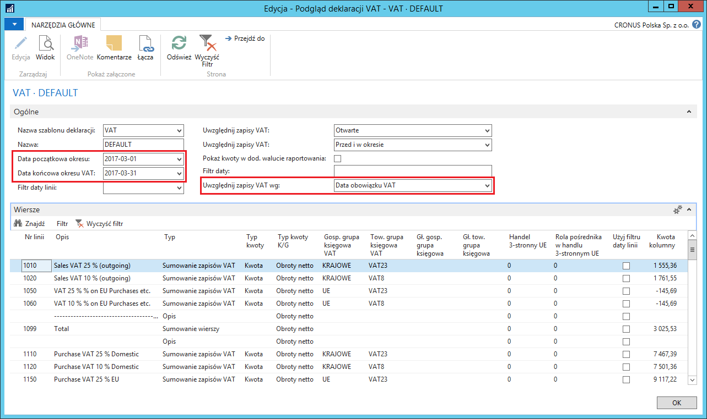
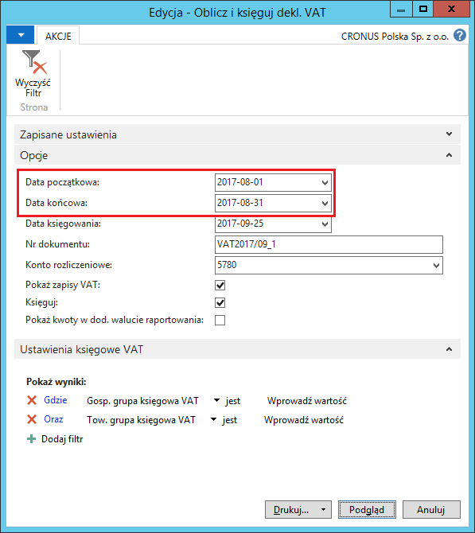
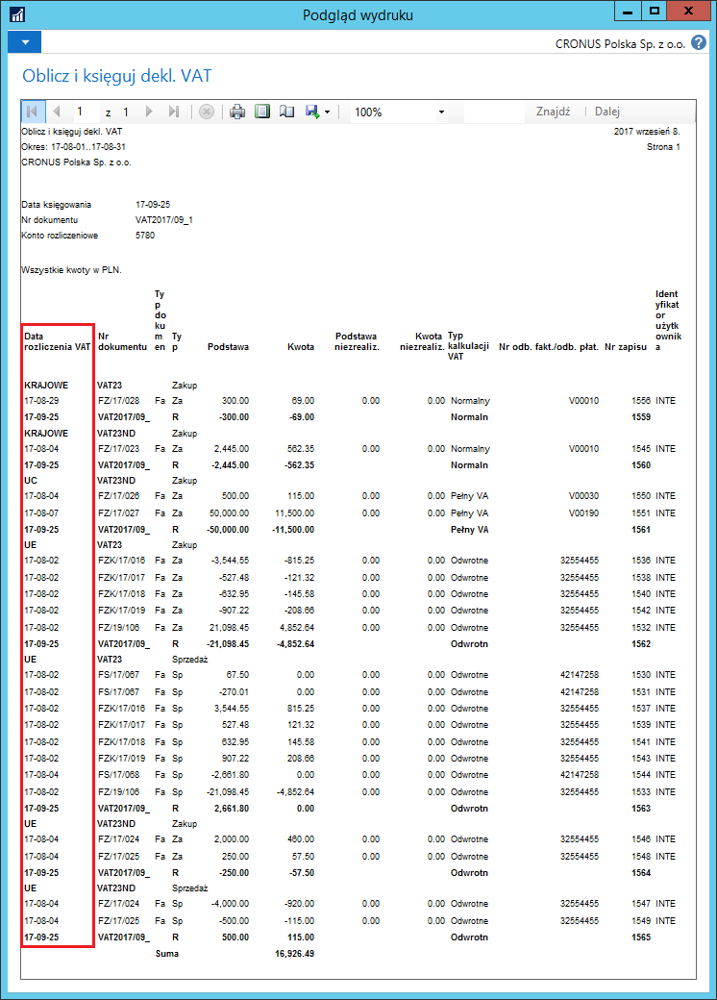
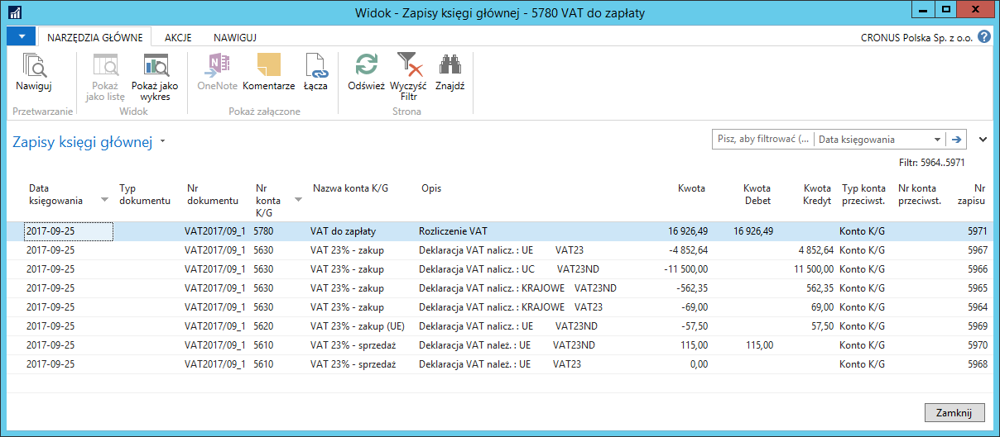
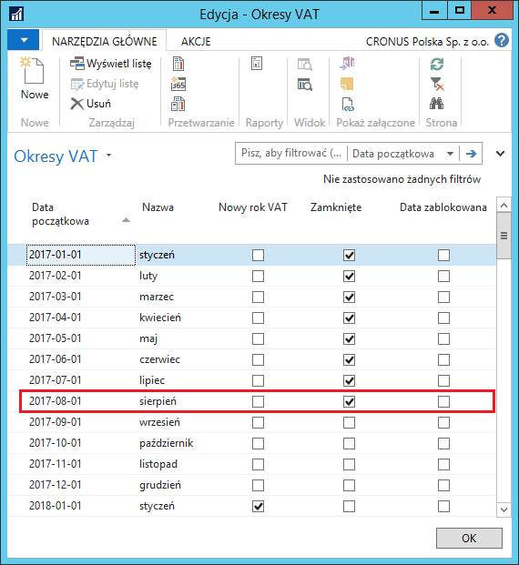

Deklaracja VAT
Informacje ogólne
Deklaracja VAT jest standardowym narzędziem pomocnym w przygotowaniu deklaracji na potrzeby Urzędu Skarbowego. Narzędzie umożliwia generowanie sprawozdania dla wybranego, wcześniej zdefiniowanego, okresu VAT.
Obsługa
W celu podglądu danych deklaracji VAT dla wybranego okresu VAT, należy postępować według następujących kroków:
Należy wybrać Działy > Zarządzanie Finansami > Działania okresowe > VAT > Deklaracje VAT.
W oknie Deklaracja VAT, które się otworzy, z listy rozwijanej w polu Nazwa należy wybrać jedną z wcześniej zdefiniowanych deklaracji. Następnie należy wybrać Podgląd.
W oknie Podgląd deklaracji VAT, które się otworzy, można uzupełnić nowe pola:
W polu Data początkowa okresu VAT należy wprowadzić datę początkową wybranego okresu, zgodną z okresami zdefiniowanymi wcześniej w oknie Okresy VAT.
Pole Data końcowa okresu VAT zostanie uzupełnione automatycznie na podstawie daty w polu Data początkowa okresu VAT i okresów zdefiniowanych wcześniej w oknie Okresy VAT.
W polu Uwzględnij zapisy VAT należy wybrać datę w oknie Zapisy VAT, na którą będzie zakładany filtr okresu VAT. Dostępne opcje to: Data obowiązku VAT i Data księgowania.

Po uzgodnieniu danych w oknie Podgląd deklaracji VAT, można na ich podstawie obliczyć i zaksięgować rozliczenie podatku VAT. W tym celu należy postępować według następujących kroków:
W oknie Deklaracja VAT należy wybrać Oblicz i księguj dekl. VAT.
W oknie wstępnym skryptu Oblicz i księguj dekl. VAT należy standardowo wprowadzić właściwe parametry w standardowych polach.
Nowe pola należy uzupełnić następująco:
W polu Data początkowa należy wprowadzić datę początkową wybranego okresu (lub wybrać z listy rozwijanej w tym polu), zgodną z okresami zdefiniowanymi wcześniej w oknie Okresy VAT.
Pole Data końcowa zostanie uzupełnione automatycznie na podstawie daty w polu Data początkowa i okresów zdefiniowanych wcześniej w oknie Okresy VAT. Data może zostać zmieniona ręcznie.

- Następnie w tym samym oknie należy wybrać Podgląd lub Drukuj w celu wykonania skryptu.
Uwaga
Zaznaczenie pola Księguj spowoduje zaksięgowanie dokumentu po wybraniu Podgląd lub Drukuj. Aby uruchomić skrypt w trybie testowym, pole Księguj nie może być zaznaczone.

Uwaga
System filtruje Zapisy VAT używając Daty obowiązku VAT (w odróżnieniu od Daty księgowania) **i **przygotowuje raport pokazujący zapisy, które zostaną przeksięgowane na konto KG wybrane w polu Konto rozliczeniowe. Wydruk (i podgląd wydruku) zawiera również informację o Dacie obowiązku VAT.
Należy powrócić do okna Oblicz i księguj dekl. VAT i zaznaczyć pole Księguj, a następnie ponownie wykonać skrypt.
System zaksięguje przeniesienie kwoty podatku VAT należnego i naliczonego na konto rozliczeniowe i zamknie rozliczony Okres VAT.

